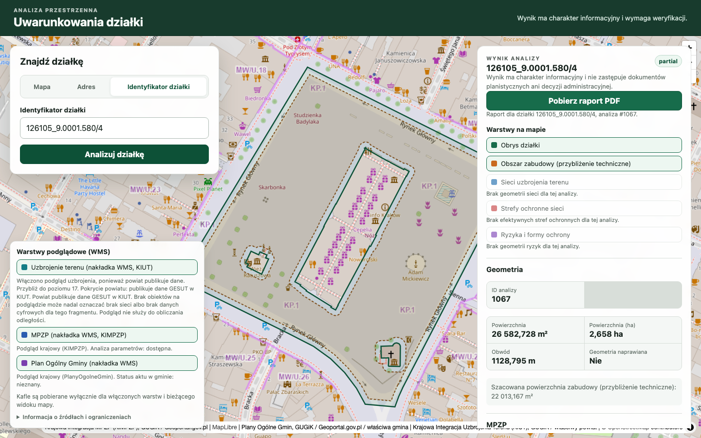
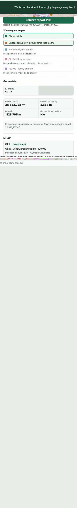
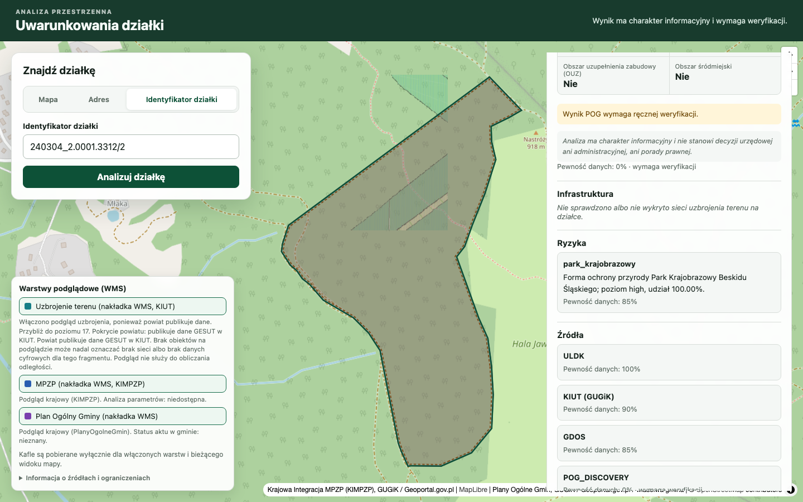
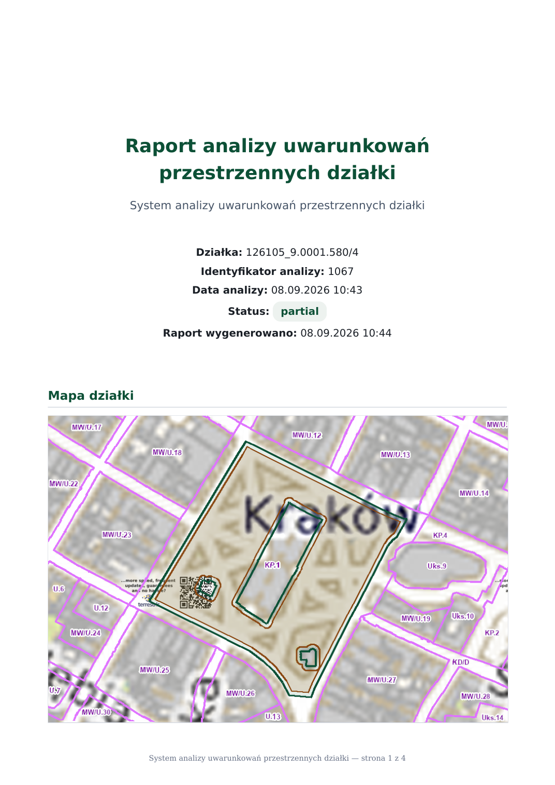

Wydział Budowy Maszyn i Informatyki · kierunek Informatyka · specjalność Inżynieria Oprogramowania
Igor Kądziela, nr albumu 61304 · promotor: mgr inż. Maksymilian Grygiel
Raport postępu części praktycznej pracy inżynierskiej
Data: 8 września 2026 r.
Temat pracy
System analizy uwarunkowań przestrzennych działki
Kategoria pracy: projektowa
Celem części praktycznej jest działająca aplikacja, która po wskazaniu działki
ewidencyjnej zbiera uwarunkowania planistyczne i terenowe z publicznych źródeł GIS
i przedstawia je na mapie, w panelu wyniku oraz w raporcie PDF.
Co zostało zrobione
Uruchamiany w Docker Compose stos: frontend (Next.js, mapa MapLibre), backend (FastAPI) i baza PostgreSQL/PostGIS.
Trzy sposoby wyboru działki: kliknięcie w mapę, wyszukiwanie adresu z podpowiedziami oraz identyfikator ewidencyjny (ULDK / TERYT).
Analiza geometrii działki w układzie EPSG:2180 (powierzchnia, obwód, techniczne przybliżenie obszaru zabudowy) i naniesienie obrysu na mapę.
Wykrywanie MPZP (KIMPZP), odczyt parametrów strefy oraz podgląd rastra planu; parser dokumentów planu z OCR dla skanów.
Moduł Planu Ogólnego Gminy i obszaru uzupełnienia zabudowy (OUZ) — na razie w trybie discovery, z jawnym statusem niepewności.
Nakładki WMS: MPZP, POG i uzbrojenie terenu (KIUT), pobierane przez bezpieczne proxy backendu z cache’em kafli.
Analizy dodatkowe: pokrycie KIUT, ryzyko powodziowe (ISOK), formy ochrony przyrody (GDOŚ), model terenu (NMT).
Zapis snapshotu analizy oraz generator raportu PDF wyłącznie z zapisanego wyniku (bez ponownego odpytywania urzędów).
Katalog źródeł danych, atrybucja i nota, że wynik jest informacyjny; dokumentacja API (OpenAPI/Swagger).
Testy automatyczne backendu i frontendu oraz pipeline CI; fixtury kontraktów Rejestru Urbanistycznego (WMS 1.3.0, WFS 2.0, CSW).
W części pisemnej pracy: rozdziały o GIS, planowaniu przestrzennym (MPZP, WZ, POG, OUZ), geometrii obliczeniowej i przeglądzie istniejących systemów (Geoportal, OnGeo, dzialka.online).
Co zostało do zrobienia
Uzupełnienie części pisemnej: wstęp, cel i zakres oraz rozdziały o architekturze, implementacji, testach i wnioskach.
Przełączenie podglądu planów na Rejestr Urbanistyczny (WMS 1.3.0) przed wygaśnięciem usług GUGiK (termin 30 września 2026 r.).
Pełny wynik POG dla działki: wszystkie przecinające strefy z udziałami powierzchniowymi, rozdzielenie stanu prawnego aktu od pokrycia danymi oraz reguła ścieżki warunków zabudowy.
Import wektorowy POG wybranych gmin (WFS 2.0) i przecięcia w PostGIS zamiast samego podglądu WMS.
Kompletna sekcja POG i mapa stref w raporcie PDF, spójna z panelem wyniku.
Testy E2E ścieżki „działka → analiza → PDF” oraz publiczna demonstracja pod stałym adresem.
Dopracowanie zapisów provenance (m.in. długie adresy URL źródeł, takich jak NMT) i pokrycia wektorowego uzbrojenia tam, gdzie dane są dostępne.
Zrzuty ekranu
Poniższe zrzuty pochodzą z lokalnie uruchomionej aplikacji
(http://localhost:3000, API http://localhost:8000)
w dniu 8 września 2026 r.
Rys. 2. Wyszukiwanie po adresie z podpowiedziami. Analiza startuje dopiero po wyborze konkretnej sugestii.

Rys. 3. Wynik analizy działki 126105_9.0001.580/4 (Rynek Główny w Krakowie):
obrys działki, szacowany obszar zabudowy, powierzchnia 26 583 m², status partial,
przycisk pobrania raportu PDF. Analizę uruchomiono identyfikatorem ewidencyjnym.

Rys. 4. Panel wyniku: warstwy mapy, metryki geometrii oraz strefa MPZP KP.1
(dominująca, 100% powierzchni działki) z jawną pewnością danych 50%.

Rys. 5. Działka 240304_2.0001.3312/2: wykrycie ryzyka
park_krajobrazowy (Park Krajobrazowy Beskidu Śląskiego, źródło GDOŚ, pewność 85%)
oraz lista źródeł z poziomem pewności.

Rys. 6. Raport PDF wygenerowany ze snapshotu analizy nr 1067: identyfikator działki,
status, data oraz mapa z obrysem i oznaczeniami planu miejscowego (m.in. KP.1).